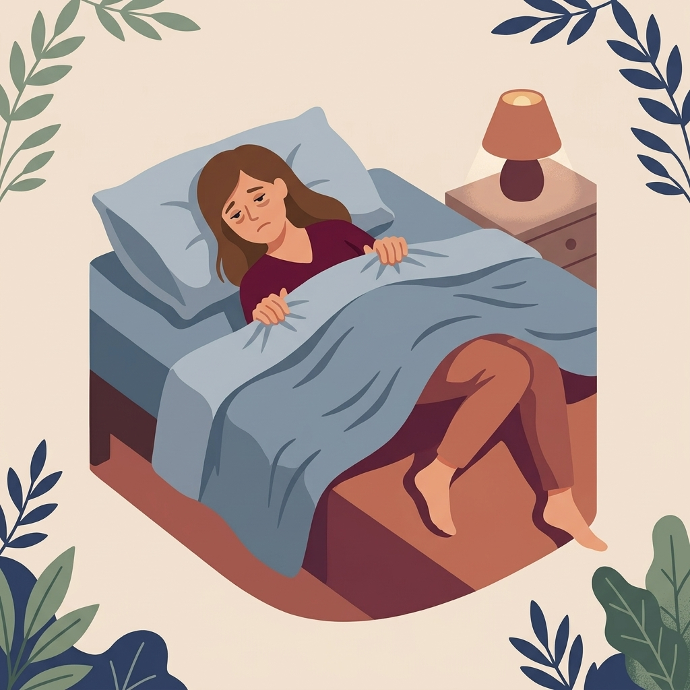

Warum so viele Menschen nachts wach liegen, obwohl sie eigentlich müde sind.
Millionen Deutsche kennen dieses Gefühl.
Mehr erfahrenV1 — Fullscreen Image + Gradient Overlay
Kein Video, statisches Bild. Schnell, scharf, kein Laden.

Millionen Deutsche kennen dieses Gefühl.
V2 — Split Layout (Video oben, Text unten)
Video nimmt nur 45% ein, dadurch schneller + schärfer. Text darunter auf hellem Hintergrund.
Millionen Deutsche kennen dieses Gefühl.
V3 — Minimal Centered (Logo + kleines Video-Circle)
Typografie-fokussiert, rundes Mini-Video als Akzent. Am schnellsten, am schärfsten.
Millionen Deutsche kennen dieses Gefühl.
Mehr erfahren